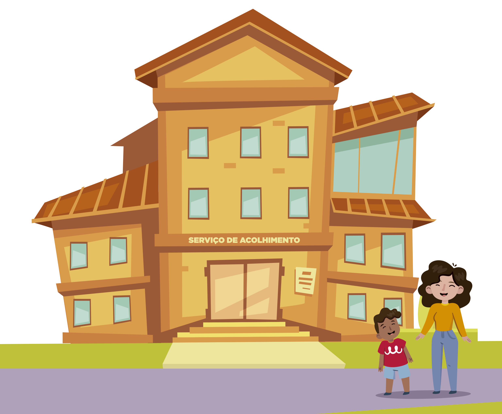

Em todo mundo, a despeito das especificidades que caracterizam diferentes formações econômicas e políticas nacionais, surgiram condições de um novo paradigma para a juventude, sob a luz do novo milênio. É a geração atual que, justamente por ser jovem, experimenta de forma mais intensa as novas maneiras de ser e estar no mundo, vivenciando novas conexões entre tempo e espaço, por meio da disseminação das novas tecnologias de informação e comunicação.
Os jovens de hoje são também aqueles que experimentam de forma mais intensa os desafios e as consequências das rápidas e incessantes mudanças tecnológicas que transformam as relações interpessoais e o mundo do trabalho, que provocam novos fluxos migratórios e que impõem novas e criativas estratégias de inserção social e produtiva.
Nesse sentido, buscando facilitar o acesso à informação e atuando no papel de mediadores desse universo de conhecimento que é ao mesmo tempo intenso e disperso, a Prefeitura de Caxias do Sul, por meio da Secretaria de Segurança Pública e Proteção Social, criou este "Guia da Juventude". Um documento que reúne um pouco sobre a história das políticas públicas para os jovens no país, com um destaque especial aos mecanismos criados na cidade e uma série de ações, projetos e programas que podem ser usufruídos pela juventude caxiense. As iniciativas envolvem as áreas da Educação, Saúde, Esporte, Cultura, Trabalho, Meio Ambiente, entre outras.
Este guia digital foi criado em parceria com a Universidade de Caxias do Sul e o curso de Bacharelado em Criação Digital. Ele foi desenvolvido pelos estudantes da disciplina de Criação em Hipermídia, sob orientação da Prof. Elisa Boff.
Juventude, enquanto conceito social, é uma noção ambígua. Além da questão da faixa etária, essa etapa de transição da vida de todas as pessoas é objeto de reflexão, preocupação e admiração. Em agosto de 2013, foi sancionada a Lei Federal no 12.852 - Estatuto da Juventude, que aponta os direitos e políticas públicas da juventude brasileira. No estatuto, são considerados jovens os indivíduos entre 15 e 29 anos. Mas, na sociedade pós-moderna, esse período não possui um tempo fixo, podendo se alongar ou até mesmo ser mais curto, devido às circunstâncias de cada sujeito e ao contexto no qual vive. Além disso, apenas esses elementos não representam também o fim da juventude, uma vez que essas transformações ocorrem de formas distintas.
55,8 milhões de habitantes. RIO GRANDE DO SUL - 11,3 milhões. CAXIAS DO SUL - 131,5 mil. Estimativa apontada em estudo do Observatório do Trabalho da Universidade de Caxias do Sul (UCS), com base em dados do Instituto Brasileiro de Geografia e Estatística (IBGE).
A evolução histórica das demandas e conquistas da juventude se desenvolveu
ao longo dos anos no Brasil. O início do processo de reconhecimento da juventude
brasileira ainda nos primeiros anos do século XIX, com o movimento abolicionista,
e nas primeiras décadas do século XX, com ações como a Semana de Arte Moderna, que
fomentaram mudanças sociais.
No âmbito da legislação nacional, é possível considerar o Código de Menores,
sancionado em 1927, como o primeiro marco legal voltado para o público jovem.
Sob a inspiração deste código, foram criados, em 1941, o Serviço de Assistência ao Menor (SAM) e,
em 1964, a Fundação Nacional do Bem-Estar do Menor (FUNABEM).
Com a Constituição Federal de 1988, o Estado se obriga a garantir direitos iguais para todos os
cidadãos. As leis que foram criadas após a promulgação da carta magna da redemocratização. Sai
de cena o Código de Menores e passa a valer o Estatuto da Criança e do Adolescente.
Nesse sentido, no ano de 2003, após uma mobilização que promoveu dezenas de audiências públicas
com especialistas, gestores públicos e representantes da sociedade civil, mobilizando milhares
de jovens, surgiu o primeiro Plano Nacional de Juventude, na forma do Projeto de Lei n° 4.530,
de 2004, que foi para a tramitação.
Ainda não aprovada pelo parlamento, tal iniciativa impulsionou uma série de outros marcos
legais importantes, com seu ápice na promulgação da Proposta de Emenda à Constituição (PEC) n° 65,
de 2010, conhecida como PEC da Juventude, que tornou obrigatória a existência do plano citado,
bem como deu origem ao que viria a ser a Lei n°12.852, de 2013, o Estatuto da Juventude.
Desde então, muitas mudanças ocorreram. Foram realizadas três conferências de juventude:
A 1°Conferência Nacional de Juventude (2008): "Levante sua bandeira".
A 2° Conferência Nacional de Juventude aconteceu (2011): "Conquistar direitos, desenvolver o Brasil!".
A 3° Conferência Nacional de Juventude aconteceu (2015): "As várias formas de mudar o Brasil”
Foi a primeira a ser realizada contemplando os eixos temáticos elencados no Estatuto da Juventude.
As três Conferências Nacionais de Juventude mobilizaram e reuniram milhares de jovens, que debateram as propostas de políticas públicas a serem implementadas pelo Estado brasileiro, para atender as demandas dos diferentes segmentos de juventude.
Os jovens têm papel destacado em vários momentos da história do país: 1901 - movimento de estudantes no RJ contra aumento no preço dos bondes 1910 - 1o Congresso Nacional de Estudantes 1937 - criação da UNE- União Nacional dos Estudantes 1947 - campanha "O petróleo é nosso" 1948 - criação da UBES - União Brasileira dos Estudantes Secundaristas A partir de 1964 - luta contra a ditadura Anos 1990 - movimento "Caras Pintadas" 2010 - PEC da Juventude 2013 - Jornadas de Junho
Nas estruturas de governo, em todas as esferas de poder, foram criados departamentos, conselhos e frentes parlamentares para implementar, articular e monitorar ações, projetos e programas voltados aos jovens. Na União, o marco legal que insere os jovens nas unidades do governo federal é a criação da Lei n° 11.129, de junho de 2005, que instituiu o Programa Nacional de Inclusão de Jovens - ProJovem, criou o Conselho Nacional da Juventude - CNJ e a Secretaria Nacional de Juventude - SNJ. No âmbito estadual, vinculada às políticas de justiça e direitos humanos, é criada por volta do ano 2010 a Coordenadoria Estadual de Juventude, transformada em Departamento de Políticas de Juventude no ano de 2016. Em Caxias do Sul, foi criada no ano de 2005 a Coordenadoria da Juventude, juntamente à estrutura da Secretaria Municipal da Segurança Pública e Proteção Social (SMSPPS), por meio da Lei n° 6.483. O objetivo da unidade é atuar no desenvolvimento e na articulação das políticas públicas destinadas aos jovens dos 15 aos 29 anos no âmbito municipal. Ao longo dos anos, outras iniciativas como a criação do Conselho Municipal da Juventude - Comjuve (por meio da Lei n° 7.303, de 17 de junho de 2011) e a instituição da Semana Municipal da Juventude (por meio da Lei n° 7.339, de 16 de setembro de 2011). Em Caxias foram organizadas (até a publicação deste guia) quatro edições de Conferências Municipais de Juventude, mobilizando centenas de jovens na construção das políticas.
1° - 08/12/2007 - “Comunicação, Participação Social, Segurança, Marginalidade e Juventude” 2° - 27/08/2011 - “Democracia, Participação e Desenvolvimento Nacional” Local: Universidade de Caxias do Sul 3° - 01/08/2015 - “As várias formas de mudar o Brasil” 4° - 09/12/2017 - “Importância da construção de uma política pública de juventude em Caxias do Sul “
Busca assegurar o efetivo acesso aos direitos dos jovens, em consonância com o que preconiza o Estatuto da Juventude (Lei Federal 12.852/13): direito à cidadania, à participação social e política e à representação juvenil; direito à educação; direito à profissionalização, ao trabalho e à renda; direito à diversidade e à igualdade; direito à saúde; direito à cultura; direito à comunicação e à liberdade de expressão; direito ao desporto e ao lazer; direito ao território e à mobilidade; direito à sustentabilidade e ao meio ambiente; direito à segurança pública e o acesso à justiça. Por meio de um plano de ação, desenvolve atividades e projetos articulados com dezenas de parceiros, divididos em três programas: Programa de Apoio à Aprendizagem Profissional e Inserção ao Mundo do Trabalho - Jovens pelo Direito ao Trabalho: visa incentivar a criação de mecanismo para a geração de trabalho e renda, bem como de apoio à formação profissional qualificada; Programa de Promoção dos Direitos da Juventude: visa garantir o direito à cidadania, à participação social e política e à representação juvenil; Programa Jovens por uma Cultura de Paz - Centros de Cidadania e Juventude: visa promover uma cultura de paz por meio da criação de espaços de oportunidade e protagonismo aos jovens caxienses;
O Conselho Municipal da Juventude ( COMJUVE ) é um órgão de caráter consultivo e fiscalizador e tem como objetivos principais : estudar, analisar, elaborar, discutir e propor planos, programas e projetos relativos à juventude no âmbito do Município ; participar da elaboração e da execução de políticas públicas da juventude, em colaboração com os órgãos públicos municipais ; desenvolver estudos e pesquisas relativas à juventude, objetivando subsidiar o planejamento das ações públicas no Município ; fiscalizar e exigir o cumprimento da legislação referente aos direitos dos jovens, dentre outros.
A Identidade Jovem, ou ID Jovem, é o documento que possibilita acesso aos benefícios de meia-entrada em eventos artísticos, culturais e esportivos e também a vagas gratuitas ou com desconto no sistema de transporte coletivo interestadual, para os jovens de 15 a 29 anos inseridos em família com renda de até dois salários-mínimos e estar inscrito no Cadastro Único de Programas Sociais e ter a ID Jovem pode ser emitida por aplicativo para celulares (que pode ser baixado gratuitamente nas lojas de aplicativos) ou pela página da internet idjovem.juventude.gov.br.
O Cadastro Único para programas sociais em Caxias do Sul é vinculado à Fundação de Assistência Social - FAS e fica localizado na Rua Os Dezoito do Forte, 1222, no Centro. O telefone para contato é (54) 3201.7800.
A Lei Federal no 12933/2013, também conhecida como Lei da Meia-Entrada,
garante o benefício do pagamento da metade do preço do ingresso:
Cinemas;
Teatros;
Eventos culturais, esportivos e de entretenimento em geral;
Para estudantes, idosos, pessoas com deficiência e jovens de baixa renda com idade entre 15 e 29 anos. A concessão do direito ao benefício da Meia-Entrada é assegurada em 40% (quarenta por cento) do total dos ingressos disponíveis para cada evento. Para os jovens estudantes, o documento é emitido por entidades estudantis como a União Nacional dos Estudantes (UNE), a Associação Nacional de Pós-Graduandos (ANPG) e a União Brasileira dos Estudantes Secundaristas (UBES).
Para confeccionar o cartão, basta acessar o site do Documento do Estudante (www.documentodoestudante.com.br). Após criar o cadastro, é preciso enviar algumas informações sobre a instituição de ensino e o curso em que está matriculado. Depois disso, será necessário enviar foto, a cópia de um documento de identificação e o comprovante de escolaridade. Por fim, os documentos e o pagamento passarão por um período de confirmação e aprovação. Assim que estiver aprovado, o beneficiado terá acesso à carteirinha provisória, para ser usada enquanto a carteira de estudante é enviada para o endereço cadastrado para entrega.
Estudantes cadastrados e ativos em instituições de ensino têm como benefício isenção de pagamento de 50% do valor da tarifa urbana. O cartão estudantil é um documento que deve ser utilizado somente pelo estudante cadastrado e não pode, ser emprestado. O cartão apreendido por uso indevido será recolhido e o estudante perderá o direito. O cadastro é realizado em qualquer época do ano. Alunos matriculados em cursos profissionalizantes, cursos de inglês ou informática não têm direito ao cartão estudantil.
Para ter a isenção da passagem, o estudante deve entrar em contato com as entidades estudantis - Associação dos Estudantes do Rio Grande do Sul (AERGS), União Gaúcha dos Estudantes (UGES) e União Estadual dos Estudantes (UEE). Têm direito ao benefício estudantes que comprovem renda per capita de até 1,5 (um e meio) salário-mínimo regional faixa 01, que residam em uma cidade mas estudem em outra e que comprovem frequência nas instituições de ensino. O Passe Livre é válido em viagens intermunicipais de categoria metropolitana, entre municípios da mesma Região Metropolitana ou Aglomerado Urbano. No caso da Serra Gaúcha, para deslocamentos de ônibus entre as cidades de Caxias do Sul, Bento Gonçalves, Carlos Barbosa, Farroupilha, Flores da Cunha, Garibaldi, Monte Belo do Sul, Nova Pádua, São Marcos e Santa Tereza.
Para cidades fora dessa lista, o Passe Livre não é válido.
O período de alistamento militar obrigatório para os jovens que completam 18 anos ocorre sempre no primeiro semestre de cada ano e pode ser feito pelo site do Exército ou na Junta Militar, que fica no 3° andar do Centro Administrativo (rua Alfredo Chaves, número 1.333, bairro Exposição), das 10h às 16h. Para se alistar é necessário:
Quem não tiver documento com foto deve providenciá-lo antes do término do prazo. Apenas após a passagem pela seleção militar no 3o Grupo de Artilharia Antiaérea (3o GAAAe) o conscrito saberá se será dispensado ou convocado. Mais informações sobre os processos de alistamento na Junta Militar da prefeitura presencialmente ou pelo telefone (54) 3218.6213.
O alistamento eleitoral é um dos requisitos obrigatórios para que o eleitor possa votar para eleger seus representantes e ser votado, caso venha a se candidatar. É por meio do título de eleitor que o cidadão comprova sua inscrição perante a Justiça Eleitoral. O alistamento eleitoral e o voto são obrigatórios para os maiores de 18 anos e facultativos para analfabetos e para quem tem idade entre 16 e 18 anos, ou superior a 70 anos. Para fazer o alistamento e obter o título de eleitor, o cidadão deve comparecer ao cartório eleitoral da cidade, portando documento de identidade, comprovante de residência, e certificado de quitação do serviço militar.
Cartório da Justiça Eleitoral em Caxias do Sul fica na Rua Garibaldi, 596, no Centro.
É direito do jovem acesso à educação de qualidade, da educação básica ao Ensino Superior, como políticas de inclusão de pessoas com deficiência, jovens do campo, políticas afirmativas e ações de complementação de estudos, por meio de modalidades de educação de jovens e adultos.
Rede MunicipalEnsino Fundamental 81 escolas em Caxias do Sul, cuja lista completa se encontra no site caxias.rs.gov.br; Atualmente, mais de 3 mil professores atendem cerca de 40 mil estudantes, divididos entre a Educação Infantil , Ensino Fundamental, Educação Especial e Educação de Jovens e Adultos (EJA);
Rede EstadualSão 57 escolas na cidade, que oferecem as modalidades de Ensino Fundamental, Ensino Médio, Ensino Técnico e Educação de Jovens e Adultos. Por meio do site educacao.rs.gov.br/busca-de-escolas; A cidade conta com um campus da Universidade Estadual do Rio Grande do Sul (UERGS), localizada no bairro Cinquentenário;
Rede FederalCampus do Instituto Federal de Educação, Ciência e Tecnologia do Rio Grande do Sul (IFRS), localizado no bairro Fátima. Atualmente, mais de mil alunos estudam nos três turnos em que ocorrem os cursos das modalidades de Ensino Médio, técnico, graduação, pós-graduação e Proeja (educação profissional técnica de nível médio para jovens e adultos); 50 instituições particulares na cidade com oferta de Ensino Fundamental, Médio, Técnico, Supletivo, Graduação e Pós-Graduação, sejam em unidades presenciais ou pela modalidade de Ensino a Distância (EAD);
A cidade conta uma Central de Matrículas para as inscrições no Ensino Fundamental e Médio da rede pública de ensino.
É uma modalidade destinada àqueles que não tiveram acesso ou continuidade de estudos no Ensino Fundamental
ou Médio na idade própria. Para a inscrição nessa modalidade, o jovem tem que ter a partir de 18 anos.
Para conclusão do Ensino Fundamental nas escolas da rede municipal, definindo que apenas seis
instituições ofereçam a EJA, conforme a região: na zona sul, a referência é a escola Prefeito
Luciano Corsetti; na zona leste, as escolas Guerino Zugno e Caldas Júnior; na zona norte, Presidente
Castelo Branco e Dolaimes Stedile Angeli - CAIC; e na zona oeste é a escola Rosário de São Francisco.
Já na rede estadual, dezenas de escolas oferecem EJA para Ensino Fundamental e Médio. A cidade
também conta com um Núcleo Estadual de Educação de Jovens e Adultos, localizado no Centro da cidade,
que é um estabelecimento de ensino próprio voltado especificamente para atendimento desse serviço.
Mais informações podem ser obtidas junto à 4a Coordenadoria Regional de Educação.
É o Programa Nacional de Integração da Educação Profissional com a Educação Básica, na Modalidade de Jovens e Adultos, que tem por objetivo oferecer oportunidade da conclusão da educação básica, juntamente à formação profissional àqueles que não tiveram acesso ao Ensino Médio na idade regular.
Requisitos:Ter concluído os anos finais do Ensino Fundamental. Possua idade igual ou superior a 18 anos completos. Os cursos ofertados no Proeja são Técnicos em Nível Médio, integrados à Educação Básica, na Modalidade de Educação de Jovens e Adultos. Em Caxias, essa modalidade é oferecida no campus do Instituto Federal de Educação, Ciência e Tecnologia do Rio Grande do Sul.
Programa Universidade para Todos (ProUni) - Concede bolsas de estudo integrais e parciais em instituições privadas de Ensino Superior para os estudantes brasileiros de baixa renda.
Requisitos:
Estudantes egressos do Ensino Médio da rede pública ou da rede particular na condição
de bolsistas integrais da própria escola;
Estudantes com deficiência;
Professores da rede pública de ensino, no efetivo exercício do magistério da educação básica;
Integrantes de quadro de pessoal permanente de instituição pública. Nesse caso, não é necessário comprovar renda;
Para concorrer às bolsas integrais, o candidato deve comprovar renda familiar bruta
mensal, por pessoa, de até um salário-mínimo e meio. Para as bolsas parciais (50%), a renda familiar bruta
mensal deve ser de até três salários-mínimos por pessoa. Para participar do processo seletivo o estudante
deve ter prestado o Exame Nacional do Ensino Médio (Enem) do ano anterior.
Fundo de Financiamento Estudantil (Fies)
É um programa destinado a financiar prioritariamente estudantes de cursos de graduação.
Para obter financiamento para o curso superior deve inscrever-se no processo seletivo do FIES,
conduzido pela Secretaria de Educação Superior do Ministério da Educação - MEC
e estar regularmente matriculado em curso de graduação não gratuito oferecido por
Instituição de Ensino Superior cuja mantenedora tenha efetuado adesão ao FIES. Todas as
operações de adesão das instituições de ensino, bem como de inscrição dos estudantes são
realizadas pela internet.
Revalidação de diploma
Atualmente, para ter validade nacional, o diploma de graduação obtido em instituição estrangeira tem que
ser revalidado por universidade brasileira pública na mesma área de conhecimento ou em área afim. São
necessários documentos solicitados. O aluno deverá pagar uma taxa referente ao custeio das despesas administrativas.
O requerente poderá ainda realizar estudos complementares, se na comparação dos títulos, exames e provas ficar
comprovado o não preenchimento das condições mínimas.
Exame Nacional do Ensino Médio (Enem)
Avalia o desempenho do estudante e ajuda no acesso à Educação Superior, por meio do Sistema de
Seleção Unificada (Sisu), ou do Prouni, para obtenção de financiamento estudantil, para o desenvolvimento
pessoal do participante e para melhorias na educação. As provas ocorrem uma vez ao ano, organizadas pelo
Ministério da Educação.
Mais informações no site: https://enem.inep.gov.br/
Exame Nacional de Desempenho dos Estudantes (Enade)
Avalia o rendimento dos alunos dos cursos de graduação, ingressantes e concluintes, em relação aos conteúdos
programáticos dos cursos em que estão matriculados. O exame é obrigatório para os alunos selecionados e condição
indispensável para a emissão do histórico escolar. A periodicidade máxima da avaliação é trienal para cada área do
conhecimento.
Exame Nacional para Certificação de Competências de Jovens e Adultos (Encceja)
Tem como principal objetivo construir uma referência nacional de educação para jovens e adultos por meio da avaliação
de competências, habilidades e saberes adquiridos no processo escolar ou nos processos formativos, entre outros.
A participação no Encceja é voluntária e gratuita, destinada aos jovens e adultos residentes
no Brasil e no exterior, inclusive às pessoas privadas de liberdade, que não tiveram oportunidade de concluir seus
estudos na idade apropriada.
É preciso ter, no mínimo, 15 anos completos na data de realização do exame; A certificação do Ensino Médio exige a idade mínima de 18 anos completos no dia de aplicação da prova.
Grêmios
Constitui representação legítima e democrática de estudantes secundaristas.Tem por objetivos: congregar os estudantes
da escola; incentivar a liderança; promover a cooperação entre a comunidade escolar; conscientizar para o exercício
da cidadania. São regidos por estatutos próprios.
Centros ou Diretórios de Estudantes
São entidades que representam os interesses dos estudantes junto às coordenações de cursos
superiores ou junto à reitoria da instituição de ensino vinculada. Cumprem a finalidade de organizar atividades direcionadas para a melhoria da qualidade do Ensino Superior, de realizar confraternizações, de elaborar e implementar projetos acadêmicos. São também os responsáveis pela integração social e cultural dos estudantes.
Atléticas
São associações esportivas organizadas por curso ou universidade que congregam atletas estudantes da instituição. Organiza campeonatos esportivos internos e seleciona equipes de diversas modalidades para disputar jogos universitários dentro da instituição de ensino, entre instituições e em jogos municipais, estaduais e nacionais.
Bolsas de pesquisa científica
Têm por objetivo a formação de recursos humanos no campo da pesquisa científica e tecnológica em universidades, institutos de pesquisa, centros tecnológicos e de formação profissional, tanto no Brasil quanto no exterior. Há modalidades voltadas para jovens estudantes do Ensino Médio, do Ensino Superior e em nível de pós-graduação.
No entanto, é inegável que o incentivo financeiro para a pesquisa é importantíssimo. Por isso, existem também diversos programas de incentivo à pesquisa científica no país. Esse é o caso do Conselho Nacional de Desenvolvimento Científico e Tecnológico (CNPq) e da Fundação de Amparo à Pesquisa do Estado do Rio Grande do Sul (Fapergs). Em instituições como essas, é possível conseguir uma ajuda de custo durante os trabalhos de pesquisa desenvolvidos.
Os intercâmbios são uma excelente oportunidade de mudar a rotina de vida, conhecer pessoas e lugares novos, se divertir, viajar e ainda aprender um idioma. Há variados tipos de intercâmbio: high school (para Ensino Médio no exterior), au pair (da expressão em francês que significa "ao par", uma forma de trabalho fornecido em troca de alojamento e alimentação), estudo e trabalho, estudo e viagens, trabalho voluntário, estágio ou trainee, graduação, pós-graduação e cursos de idioma.
O jovem tem direito à saúde e à qualidade de vida, promoção, proteção e recuperação da saúde na forma integral. Na cidade, há uma série de ações, projetos e programas oferecidos à população juvenil.
Sistema Único de Saúde (SUS) para toda a Rede de Atenção à Saúde. Atualmente Caxias do Sul conta com 48 UBSs instaladas junto às comunidades. Nelas, é possível receber atendimentos nas áreas da pediatria, ginecologia, clínica geral, enfermagem, nutricionista, odontologia e assistência social. Todo e qualquer cidadão pode utilizar os serviços disponíveis nas UBS.
Tem por objetivo a conjugação de esforços visando à promoção à saúde e à prevenção de doenças. As ações são articuladas de forma intersetorial entre as redes de saúde e educação. Participam do programa 95 escolas e com diversas atividades em prevenção à saúde.
Tem por objetivo a prevenção de doenças, vacinação contra HPV, Hepatite B, sarampo, Caxumba e Rubéola, Tétano e Difteria. Vacinação realizada nas UBS.
Promove ações de diagnóstico e prevenção de infecções sexualmente transmissíveis. Realiza testes para HIV, sífilis e hepatites B e C. O atendimento é inteiramente sigiloso. Para fazer os exames, não há necessidade de encaminhamento, basta procurar o serviço e apresentar o Cartão SUS e um documento de identidade com foto. O CTA também disponibiliza métodos para prevenção das infecções sexualmente transmissíveis, como preservativos masculinos e femininos.
O jovem tem direito à prática esportiva destinada a seu pleno desenvolvimento, com prioridade para o desporto de participação. Dentre os diferentes programas oferecidos na cidade.
Público: 15 a 17 anos
Modalidades: corrida de rua, atletismo, xadrez, basquetebol, judô, tênis de mesa, tag rugby, handebol,
badminton, voleibol, futsal, corrida de rua PCD's, atletismo paralímpico, xadrez adaptado, bocha paralímpica
e tênis de mesa paralímpico.
Local: as atividades são realizadas em diferentes ginásios da cidade.
Público: 15 a 29 anos
Modalidades: bocha de areia, atletismo paralímpico, atletismo, bolão, voleibol, natação, natação
paralímpica e surdolímpica, basquetebol, futebol de mesa, tênis de mesa, tênis de mesa paralímpico e
surdolímpico, taekwondo, basquete em cadeira de rodas, badminton, badminton paralímpico e surdolímpico,
vôlei de areia e vôlei de areia surdolímpico, esportes náuticos.
Local: as atividades são realizadas em diferentes ginásios da cidade.
Público: 15 a 29 anos
Categorias: adulto, de base (15 – 17 anos) e feminino
Local: diferentes campos da cidade.
Público: 15 a 17 anos
Oferece aulas de remo, canoagem e vela para estudantes das diferentes redes de
ensino de Caxias do Sul. Além disso, oferece para jovens de 15 a 29 anos, vivências das três modalidades aos
sábados.
Público: 15 a 17 anos
Oferece aulas sistemáticas (semanalmente) de futsal, basquetebol, voleibol,
handebol, xadrez, jiu-jitsu, judô, badminton e padel.
Local: diferentes ginásios da cidade.
Público: 15 a 17 anos
A Secretaria Municipal do Esporte e Lazer organiza diferentes provas durante o ano:
meia maratona de Caxias do Sul, Corrida do Centenário, SEST/SENAT e Circuito Correr e Caminhar.
Local: ruas da cidade.
Público: 18 a 29 anos
Oferece aulas sistemáticas (semanalmente) de ginástica.
Local: diferentes ginásios e salões comunitários da cidade.
A Prefeitura de Caxias do Sul, por meio da Secretaria Municipal do Esporte e Lazer, mantém um conjunto de
equipamentos públicos poliesportivos, com a responsabilidade da administração, conservação e recuperação
desses espaços.
São campos de futebol e futebol sete, ginásios e quadras poliesportivas, quadras de areia, canchas de bocha,
parques infantis, academias ao ar livre e pistas de skate, num total de cerca de 275 locais.
Ginásio Enxutão
Horário: de segunda a sexta-feira, das 8h às 12h e 13h30 às 17h30
Endereço: Rua Luiz Covolan, 1560, bairro Santa Catarina
Telefone: (54) 3901.1479 / 3211.1255
Ginásio Vasco da Gama
Horário: de segunda a sexta-feira, das 8h às 12h e 13h30 às 17h30
Endereço: Rua José Soares de Oliveira, 2557, bairro Pio X
Telefone: (54) 3901.1649
Centro Social Urbano
Ginásio Serrano
Horário: de segunda a sexta-feira, das 8h às 12h e 13h30 às 17h30
Endereço: Travessão Leopoldina, s/n, bairro Serrano
Telefone: (54) 3901.1320
Centro Esportivo Zona Norte
Horário: de segunda a sexta-feira, das 8h às 12h e 13h30 às 17h30
Endereço: Rua José Zamboni esquina rua dos Apicultores, bairro Belo Horizonte
Telefone: (54) 3901.1258
Centro Esportivo Municipal Antonio Barroso Filho
Campo Municipal
Horário: de segunda a domingo, das 8h às 19h (sem fechar ao meio-dia)
Endereço: Av. Júlio de Castilhos, 4390, bairro Cinquentenário
Telefone: (54) 3901.1295
Programa Caxias Navegar
Hangar da SMEL
Horário: de segunda a sexta-feira, das 8h às 12h e das 13h30 às 17h30. Sábados das 8h30 às 11h
Endereço: Rua Amadeu Rossi, 519, bairro Fátima
Telefone: (54) 3901.8025
Campo de Futebol
Bairro Pioneiro
Horário: segunda a sexta das 8h às 12h e das 13h30 às 17h30. Sábados e domingos das 13h às 19h
Endereço: Rua Abramo João Mazzochi, 3854, bairro Pioneiro
Telefone: (54) 3217.6121
O jovem tem direito à cultura, incluindo a livre criação, o acesso aos bens e serviços culturais e a participação nas decisões de política cultural, à identidade e diversidade cultural e à memória social.
Arquivo Histórico Municipal João Spadari Adami
Atendimentos às turmas de alunos, do Ensino Fundamental ao Superior, mediante agendamento das escolas e universidades.
Museus
Os espaços desenvolvem um contínuo movimento de preservação, investigação e comunicação tanto das memórias quanto dos patrimônios socioculturais. São mantidos pela prefeitura: o Museu Municipal de Caxias do Sul, Museu Ambiência Casa de Pedra, Monumento Nacional ao Imigrante, Museu da Uva e do Vinho Primo Slomp, Museu dos Ex-Combatentes da Força Expedicionária Brasileira na II Guerra Mundial e Memorial Atelier Zambelli.
Unidade que tem por objetivo oportunizar e desenvolver a cultura e o artesanato local, bem como promover eventos e projetos nas datas comemorativas, como carnaval e natal. Desenvolve o programa Cultura na Comunidade, com a realização de oficinas gratuitas de formação artístico-cultural nas áreas de música, dança, artesanato e hip-hop.
Pontos de Cultura
São espaços criados com o objetivo de valorizar e desenvolver as manifestações culturais locais, bem como formar agentes de cultura na cidade. Os locais espalhados pela cidade oferecem à comunidade salas multiuso para apresentações de teatro, música, vídeo/cinema, palestras, etc.
A Unidade se dedica à promoção da democratização do acesso à arte e da educação e formação artística por meio da realização de exposições e mostras culturais; de eventos de formação e reflexão; da implantação de programas educativos destinados à arte, da guarda do Acervo Municipal de Artes Plásticas (AMARP), entre outros.
Exposições:
produções artísticas contemporâneas. Ocorrem no mínimo duas aberturas de exposições inéditas gratuitas por mês nos espaços expositivos localizados no Centro Municipal de Cultural Dr. Henrique Ordovás Filho.
Cabe à unidade proporcionar o acesso e ampliar a visibilidade da cultura audiovisual, propiciar a consciência da comunidade em relação ao cinema enquanto manifestação artística e formar e fidelizar espectadores para o cinema arte.
Sala de Cinema Ulysses Geremia
É um espaço de exibição de filmes inéditos não apresentados em salas de exibição com intuito comercial, mas apenas em circuitos alternativos destinados ao cinema arte. Integra o Centro de Cultura Ordovás e desenvolve programações como o Matinê às 3 e CineKids.
Essa unidade visa aproximar os profissionais da área, buscando envolvê-los na construção de uma identidade cultural para a dança na cidade; incentivar; realizar projetos; realizar eventos, como a mostra Caxias em Movimento, entre outros.
Cia. Municipal de Dança
Surgiu pela Lei no 4.677 de 7 de julho de 1997, sendo a primeira companhia oficial do Rio Grande do Sul e participa de eventos promovidos pela cidade, visando não só ao produto cultural em si mas também à educação e formação.
Escola Preparatória de Dança (EPD)
Atende, anualmente, uma média de 80 crianças e adolescentes, devidamente matriculados na rede pública de ensino, ou integrantes de instituições de assistência social. Para fazer parte da Escola Preparatória de Dança é necessário participar de um processo seletivo que ocorre, normalmente, no início de cada ano.
Responsável pelo desenvolvimento de políticas culturais na área da música, sendo também responsável por promover atividades com o objetivo de fomentar a produção, o aprimoramento e valorização dos profissionais de música de Caxias do Sul.
Orquestra Municipal de Sopros de Caxias do Sul
é atualmente referência no Rio Grande do Sul, contando com 60 músicos. Desenvolve seu trabalho buscando promover a interação da música orquestral com a comunidade.
Coral Municipal
atua desde 1975 promovendo a cultura em Caxias do Sul. Por meio de seus cantores e regentes, com o uso de figurinos, cenário e iluminação, o grupo busca aproximar ainda mais o público dos compositores, arranjadores e das obras. Centro Municipal de Cultural Dr. Henrique Ordovás Filho.comunidades do município.
Pontos de Cultura
São espaços criados com o objetivo de valorizar e desenvolver as manifestações culturais locais. Os locais espalhados pela cidade oferecem à comunidade salas multiuso para apresentações de teatro, música, vídeo/cinema, palestras, etc.
Realiza inúmeras atividades com o objetivo de fomentar a produção e a circulação de espetáculos de teatro. Além disso, promove capacitação, aprimoramento e valorização dos profissionais da área e a formação de plateia.
Festival de artes cênicas, sem caráter competitivo. O festival apresenta, anualmente, espetáculos de grupos e artistas nacionais e internacionais para os públicos adulto, infantil e juvenil.
Programa Permanente de Estímulo à Leitura (PPEL) - Tem como objetivo oferecer a toda comunidade possibilidades de contato com a leitura como parte indispensável e fundamental na formação do indivíduo.
Bibliotecas
(Biblioteca Municipal Dr. Demétrio Niederauer e Biblioteca Parque) e dezenas de bibliotecas comunitárias, como espaços de leitura e informação espalhados pela cidade.
Feira do Livro de Caxias do Sul
Tem por objetivo popularizar o livro e democratizar o acesso à leitura com seminários, palestras, sessões de autógrafos com autores locais, estaduais, nacionais e internacionais, oficinas e encontros com autores, bibliotecários e especialistas.
Concurso Anual Literário
revela os talentos literários da cidade, ao mesmo tempo que reconhece e premia autores que já publicaram algum livro, evidenciando o desenvolvimento do meio literário caxiense. Os autores de textos inéditos são premiados com troféus, medalhas e publicação em antologia. Podem participar do concurso os escritores maiores de 16 anos, que morem na cidade há, pelo menos, dois anos.
Casa da Cultura Percy Vargas de Abreu e Lima
Abriga o Teatro Municipal Pedro Parenti, a Galeria Municipal de Arte Gerd Bornheim, a Biblioteca Pública Municipal Dr. Demétrio Niederauer e um café.
Endereço: Rua Dr. Montaury, 1333, bairro Centro
Telefone: (54) 3221.3697
Centro Municipal de Cultura Dr. Henrique Ordovás Filho
Abriga a Sala de Cinema Ulysses Geremia, a Sala de Teatro Professor Valentim Lazzarotto, uma galeria de arte, uma sala de exposições, um café, um salão de artes, duas salas de dança, um acervo de obras de artes (AMARP) e um pequeno memorial da Cantina Antunes.
Endereço: Rua Luiz Antunes, 312, bairro Panazzolo
Telefone: (54) 3901.1316
Centro de Artes e Esportes Unificados (CEU) Cidade Nova
Abriga uma biblioteca, um telecentro, um cineteatro, duas salas multiuso, o Centro de Referência em Assistência Social (CRAS) Oeste, banheiros com vestiário, banheiros acessíveis, quadra poliesportiva, quadra de vôlei de areia, playground, pista de skate e de caminhada e área de ginástica.
Endereço: Rua Abel Postali, 1767, bairro Cidade Nova
Telefone: (54) 3226.1735
Largo da Estação Férrea
Ali estão instaladas a sede da Secretaria Municipal da Cultura, a Biblioteca Parque da Estação e a Praça das Feiras.
Endereço: Rua Augusto Pestana, 50, bairro São Pelegrino
Telefones: (54) 3901.1388 / 3901.1288 / 3901.1386 / 3901.1381
O poder público dispõe de mecanismos de renúncia fiscal para incentivar a cultura e o esporte. Com isso, por meio de dedução de impostos, pessoas e empresas têm a opção de destinar uma parte do que teriam de pagar ao governo para projetos culturais, esportivos e sociais à sua escolha.
O Financiamento da Arte e Cultura Caxiense, criado pela Lei no 6.967 de 30 de julho de 2009, tem por finalidade prestar apoio financeiro a projetos como forma de estímulo à produção artística e cultural no município de Caxias do Sul. Os recursos podem ser aplicados em projetos para os seguintes segmentos: Artes Visuais; Cinema e Vídeo; Dança; Folclore / Artesanato; Literatura; Música e Teatro.
Para usufruir dos benefícios desta lei, o projeto cultural deverá ser protocolado no Departamento de Fomento da Secretaria Municipal da Cultura. Depois de aprovado pela Comissão Municipal de Incentivo à Cultura (COMIC), fica autorizado a buscar incentivo junto às empresas pagadoras de ISSQN ou às pessoas físicas ou jurídicas pagadoras de IPTU na cidade. O incentivador poderá aplicar, em projeto cultural de sua preferência, até 20% do imposto devido, na forma de apoio cultural ou patrocínio.
O Financiamento Municipal de Desenvolvimento do Esporte e Lazer de Caxias do Sul, tem a finalidade de prestar apoio financeiro para a implementação e/ou ampliação de programas e projetos que fomentem e estimulem o desenvolvimento de atividades esportivas e de lazer no município.
Governo do Estado:
Programas Pró-cultura RS LIC (Lei de Incentivo à Cultura)
FAC (Fundo de Apoio à Cultura);Pró-esporte RS LIE (Lei de Incentivo ao Esporte)
FEIE (Fundo Estadual de Incentivo ao Esporte)
Governo Federal
Leis do Audiovisual (No 8.685/93)
Leis de Incentivo à Cultura (No 8.313/91)
Leis de Incentivo ao Esporte (No 11.438/06)
O jovem tem direito à sustentabilidade e ao meio ambiente ecologicamente equilibrado, bem de uso comum do povo, essencial à sadia qualidade de vida, e o dever de defendê-lo e preservá-lo para a presente e as futuras gerações.
A Secretaria Municipal do Meio Ambiente desenvolve diversas atividades que podem ser executadas pelo público jovem, tais como: roteiros Mato Sartori e Jardim Botânico, palestras, concurso cultural Calendário Ecológico, concurso fotográfico Clic Ambiental e Olimpíada Ambiental, de acordo com a demanda.
Parque Getúlio Vargas - Macaquinhos
Endereço: entre as ruas Dr. Montaury, Dom José Barea, Alfredo Chaves e Avenida da Vindima, no Exposição
Parque Cinquentenário
Rua: Av. Júlio de Castilhos, 164, no bairro Cinquentenário
Parque Municipal Mato Sartori
Endereço: Rua Borges de Medeiros, 200, no bairro Jardim América
Parque Celeste Gobatto - Jardim Botânico
Rua: Atílio Andreazza, no bairro Interlagos
Parque Municipal Demétrio Monteiro da Silva - Parque da Lagoa do Desvio Rizzo
Endereço: Rua Nestor Domingos Rizzo, 2219, no bairro Desvio Rizzo
Praça Dante Alighieri
Endereço: formado pelas quadras da Avenida Júlio de Castilhos, com as ruas Sinimbu, Dr. Montaury e Marquês do Herval, no Centro
Praça da Bandeira - Prefeito Dante Marcucci
Endereço: rua Moreira César, entre a Sinimbu e a Os Dezoito do Forte, em São Pelegrino
Praça do Trem
Endereço: av. Rio Branco, bairro São Pelegrino, ao lado do shopping
Praça João Pessoa
Endereço: avenida Júlio de Castilhos esquina com a Rua Feijó Júnior, em São Pelegrino
Praça Monteiro Lobato
Endereço: rua Plácido de Castro, em frente a Maesa, no bairro Exposição
Praça das Castanheiras - Skate Plaza
Endereço: esquina das ruas Luiz Covolan e Professor Marcos Martini, bairro Santa Catarina
Praça Padavena - Ana Rech
Endereço: av. Rio Branco, na área central da Região Administrativa de Ana Rech
Praça Joaquim Slomp - Forqueta
Endereço: av. Luiz Franciosi Serio
Praça Amabile Cesa Vial - Galópolis
Endereço: rua Pedro Chaves, 2074
A Coordenadoria da Juventude está a sua disposição em diferentes plataformas para contato.
Endereço: Rua Alfredo Chaves, 1.333 - 3º andar do Centro Administrativo
Bairro: Exposição
Horário de atendimento: 10h às 16h
Telefone: (54) 3218.6000 - Ramal 6449
WhatsApp: (54) 9 9926.2955 (das 10h às 16h)
E-mail: juventude@caxias.rs.gov.br
Endereço: Rua Visconde de Pelotas, nº 449
Bairro: Centro
Telefone: (54) 3214.5343
Horário de atendimento: 10h às 16h
E-mail: comjuve@caxias.rs.gov.br
Endereço: Rua Alfredo Chaves, 1.333 - 1º andar do Centro Administrativo
Bairro: Exposição
Horário de atendimento: 10h às 16h
Telefone: (54) 3218.6093
Endereço: Rua Alfredo Chaves, 1.333
Bairro: Exposição
Horário de atendimento: 10h às 16h
Telefone: (54) 3218.6000
O Município mantém programas para o fomento e o desenvolvimento econômico da cidade, com a possibilidade de adesão do público jovem.
- Atende à população adulta (18 a 59 anos) com atividades com vistas à geração de trabalho e renda no meio rural; O programa ocorre, anualmente, no período de março a dezembro, em parceria com o Serviço Nacional de Aprendizagem Rural (Senar), Sindicato Rural e Sebrae.
- É o órgão centralizador dos resíduos gerados pelas indústrias têxteis.Tem por objetivo a geração de trabalho e renda nas comunidades socialmente excluídas, contribuindo com a capacitação de pessoas para o setor e transformando desperdício em benefício social e ambiental.
- Instituída através da Lei Municipal no 6.000, a Inec incentiva novos modelos de negócios para promover surgimento de atividades industriais no Município.
- Busca atender de forma centralizada as demandas dos empreendedores, uma vez que conta com representantes de todas as secretarias envolvidas no processo de formalização das empresas.
- Aprovada através da Lei no 7.329, é comemorada anualmente na segunda semana do mês de novembro, concentrando atividades como palestras, seminários, visitas técnicas, workshops, oficinas, premiações, entre outras. Dentro da programação permanente é realizado o Prêmio Jovem Talento Empreendedor.
- É um conjunto de atividades econômicas necessárias às etapas de processamento e de transformação das matérias-primas em produtos, considerando a sustentabilidade em todo o ciclo, visando ao fortalecimento das políticas voltadas às associações de recicladores localizados no município de Caxias do Sul.
- Possui a missão de realizar ações de internacionalização do Município de Caxias do Sul, promovendo a integração do poder público com os setores produtivos da sociedade e atuando como uma porta para investidores internacionais.
Informações:
Sala do empreendedor:
Telefone: (54) 3218.6000, ramal 6462
Atendimento: segundas às sextas-feiras das 10h às 16h
Atendimento
integrado com técnicos de outras secretarias municipais: quartas-feiras
das 10h às 16h
O jovem tem direito à profissionalização, ao trabalho e à renda, exercido em condições de liberdade, equidade e segurança, adequadamente remunerado e com proteção social.
Conjunto de ações que têm o objetivo de retirar crianças e adolescentes menores de 16 anos do trabalho precoce, exceto na condição de aprendiz a partir de 14 anos. O programa, além de assegurar transferência direta de renda às famílias, oferece a inclusão das crianças e dos jovens em serviços de orientação e acompanhamento. A frequência à escola também é exigida.
A Lei Federal No 10.097/2000 afirma que empresas de médio e grande porte devem contratar jovens com idade entre 14 e 24 anos como aprendizes. O contrato de trabalho pode durar até dois anos e, durante esse período, o jovem é capacitado na instituição formadora e na empresa, combinando formação teórica e prática. A cidade de Caxias do Sul conta com projetos e ações de promoção da aprendizagem profissional. Uma das iniciativas é o Fórum da Aprendizagem Profissional da Serra Gaúcha, colegiado regulado por portaria ministerial, que atua na difusão de estratégias para aumentar as oportunidades de trabalho vinculadas a essa lei federal.
Podem ser estagiários os jovens estudantes que estiverem matriculados e frequentando o ensino regular, em instituições de educação superior, de educação profissional, de Ensino Médio, da educação especial e dos anos finais do Ensino Fundamental, e na modalidade profissional da Educação de Jovens e Adultos. Há duas modalidades de vinculação: o estágio obrigatório, aquele definido como tal no projeto do curso, cuja carga horária é requisito para aprovação e obtenção do diploma e não tem remuneração; e o estágio não obrigatório, desenvolvido livremente como atividade ocupacional remunerada - e opcional no decorrer do currículo acadêmico do curso ao qual o jovem está vinculado. É possível recorrer à assistência aos estagiários da sua instituição de ensino ou procurar organizações de colocação no mercado de trabalho, como o Centro de Integração Empresa-Escola (CIEE) ou o Banestágio (Banco Nacional de Estágios).
O interessado em solicitar a Carteira de Trabalho e Previdência Social deve procurar os órgãos emissores (como agências do Sistema Nacional do Emprego - SINE).
Hoje, existem 13 instituições qualificadoras de jovens aprendizes na cidade, que atendem um público médio estimado de 2,5 mil pessoas em cerca de 25 unidades espalhadas por Caxias do Sul.
O jovem tem direito ao território e à mobilidade, incluindo a promoção de políticas públicas de moradia, circulação e acessibilidade.
A cidade conta com este programa, vinculado à Secretaria Municipal do Trânsito, Transportes e Mobilidade, e desenvolve atividades educacionais para a comunidade em geral.
Diretamente ao público-alvo dos 15 aos 29 anos são promovidas palestras e orientações sobre as leis de trânsito e os cuidados para ser um pedestre e um condutor consciente, em organizações variadas, como escolas públicas e privadas, Centros de Formação de Condutores (CFCs), cursos de formação profissional e de jovens aprendizes, atendimento de jovens em cumprimento de medida socioeducativa, grupos de igrejas, grupos escoteiros, entre outros.
Além disso, são ofertados programas de orientação sobre manutenção veicular para homens e mulheres (Mecânica do Bigode e Mecânica de Batom) e para motociclistas e ciclistas de ambos os sexos (Mecânica do Capacete e Viva Bike).
Tarifa Social da Água
O desconto na conta de água, concedido pelo Serviço Autônomo de Água e Esgoto (Samae), beneficia famílias que recebem até três salários-mínimos e estão inscritas no cadastro único da Fundação de Assistência Social (FAS), com os dados atualizados.
Mais informações pelo plantão do Samae no telefone 115 ou presencialmente na autarquia (rua Pinheiro Machado, no 1615, Centro) ou no Cadastro Único da FAS.
Tarifa Social de Energia Elétrica
Desconto na conta de energia elétrica para famílias inscritas no Cadastro Único ou pessoas que recebem o Benefício de Prestação Continuada da Assistência Social (BPC), com renda de até meio salário-mínimo por pessoa ou com renda total de até três salários-mínimos por mês que tenham entre seus membros pessoas em tratamento de saúde.
Para mais informações, o interessado deve entrar em contato com a distribuidora de energia elétrica.
Telefone Popular
Acesso a uma linha fixa de telefone, com desconto na assinatura mensal e franquia de até 90 minutos para chamadas locais para outros telefones fixos. É voltado a famílias inscritas no Cadastro Único.
Para pedir o benefício, o responsável pela família deve entrar em contato com a concessionária de telefone fixo, tendo em mãos o Número de Identificação Social (NIS) e o CPF.
O nome técnico do Telefone Popular é Acesso Individual Classe Especial (AICE).
Auxílio mudança
Prefeitura de Caxias do Sul, por meio da Secretaria Municipal da Habitação, concede auxílio no transporte de mudança intermunicipal para famílias que não possuem condições de permanecer residindo em Caxias do Sul, proporcionando o retorno a seu município de origem.
O cadastro é feito na Secretaria da Habitação, apenas nos dias das reuniões, nos horários de 8h30 e 13h30, apresentando documento de identidade e CPF e dados/comprovantes do endereço de origem e do endereço de destino.
Para mais informações sobre o dia dos encontros, o interessado pode ligar para (54) 3218.6000.
O Município executa ações dessa política por meio da Fundação de Assistência Social (FAS). Entre os diversos serviços operacionalizados, alguns atendem diretamente os jovens de 15 a 29 anos:
Tem por finalidade prover atenção socioassistencial e acompanhamento a adolescentes e jovens em cumprimento de medidas socioeducativas em meio aberto, determinadas judicialmente.
Serviço para oferta de atendimento especializado a famílias com pessoas (entre elas jovens de 18 a 29 anos) com deficiência e com algum grau de dependência, que tiveram suas limitações agravadas por violações de direitos, tais como: exploração da imagem, isolamento, confinamento, atitudes discriminatórias e preconceituosas no seio da família, falta de cuidados adequados por parte do cuidador, alto grau de estresse do cuidador, desvalorização da potencialidade/capacidade das pessoas, dentre outras que agravam a dependência e comprometem o desenvolvimento da autonomia.
Para pessoas que utilizam as ruas como espaço de moradia e/ou sobrevivência, dentre elas jovens de 15 a 29 anos. Tem a finalidade de assegurar atendimento e atividades direcionadas para o desenvolvimento de sociabilidades, na perspectiva de fortalecimento de vínculos interpessoais e/ou familiares que oportunizem a construção de novos projetos de vida.
Acolhimento provisório e excepcional para crianças e adolescentes de ambos os sexos (0 a 18 anos), inclusive crianças e adolescentes com deficiência, sob medida de proteção (art. 98 do Estatuto da Criança e do Adolescente) e em situação de risco pessoal e social, cujas famílias ou responsáveis encontrem-se temporariamente impossibilitados de cumprir sua função de cuidado e proteção.
Acolhimento provisório com estrutura para dar privacidade a pessoas do mesmo sexo ou grupo familiar. É previsto para pessoas em situação de rua e desabrigo por abandono, migração e ausência de residência ou pessoas em trânsito e sem condições de autossustento.

A cidade conta com um trabalho integrado de gestão e o desenvolvimento de ações de atendimento e implementação das políticas públicas relativas à segurança, proteção e inclusão social. O foco está na prevenção e no combate à violência, além da guarda e do zelo do patrimônio municipal.
Vinculadas à Secretaria Municipal de Segurança Pública e Proteção Social, estão a coordenação das ações da Guarda Municipal, articular a Coordenadoria Municipal de Proteção e Defesa Civil (COMPDEC), gerenciar os trabalhos relacionados ao Programa Municipal de Pacificação Restaurativa - Caxias da Paz, e desenvolver ações de cidadania e articulação das políticas de garantias de direitos das mulheres, dos jovens, das pessoas com deficiência e da promoção da igualdade racial, por meio da Diretoria de Proteção Social e suas respectivas coordenadorias.
Tem por competência a proteção dos direitos humanos fundamentais, do exercício da cidadania e das liberdades públicas, redução do sofrimento e diminuição das perdas, patrulhamento preventivo, compromisso com a evolução social da comunidade, uso progressivo da força e zelo pelos bens, equipamentos e prédios públicos do Município.
Atua por meio de ações ostensivas e de operações coordenadas de segurança. Por meio do Centro de Ações Preventivas (CAP)
Coordenadoria da Mulher
Propõe, elabora e avalia políticas públicas, bem como mobiliza, articula e fortalece a Rede de Proteção à Mulher.
Centro de Referência da Mulher
Serviço responsável pelo acolhimento, orientação e apoio psicossocial às mulheres em situação de violência doméstica e familiar.
Coordenadoria de Acessibilidade
Desenvolve políticas públicas relacionadas à acessibilidade da pessoa com deficiência.
Coordenadoria de Promoção de Igualdade Étnico-Racial
Promove, articula e executa políticas de promoção de igualdade racial.
Programa Caxias da Paz
Visa proporcionar crescimento, reorganizando e redirecionando positivamente as emoções desencadeadas pela experiência negativa de um conflito ou infração, por meio dos métodos da Justiça Restaurativa.